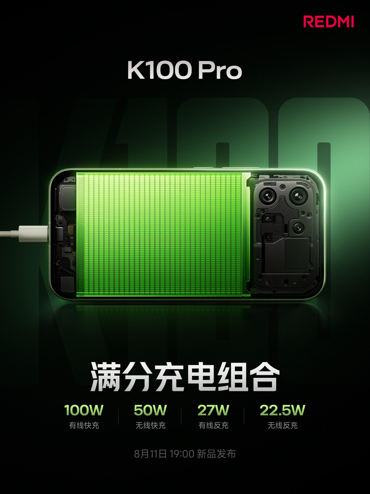
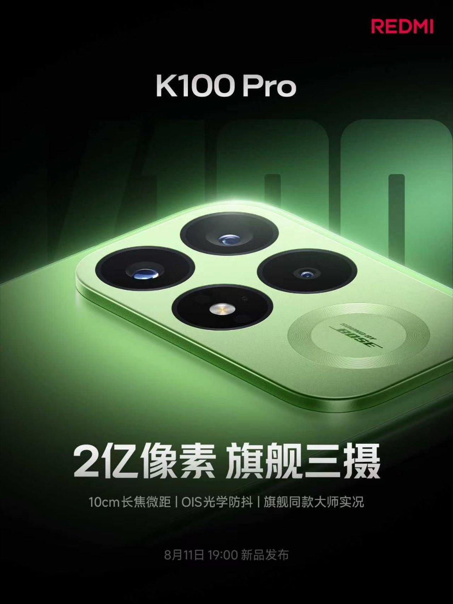

Redmi K100 Pro 출시 전 주요 정보 공개
Redmi는 오는 8월 11일 공식 출시를 앞두고 K100 Pro에 대한 핵심 세부 정보를 공개했습니다. 최신 티저 영상은 이 기기의 배터리, 충전 및 카메라 성능을 강조하며, 이미 확인된 디스플레이와 칩셋 외에도 이 컴팩트 플래그십 모델이 제공할 기능들을 더욱 명확하게 보여줍니다.
Redmi K100 Pro 배터리 및 충전 사양
Redmi K100 Pro는 26%의 실리콘 함량과 945Wh/L의 에너지 밀도를 갖춘 8,580mAh 실리콘-카본 배터리를 탑재했습니다. 브랜드 측에 따르면 이 제품은 해당 가격대에서 가장 강력한 배터리 성능 중 하나를 제공하도록 설계되었습니다.
충전 기능은 다음과 같은 광범위한 구성을 지원하며, 이는 플래그십 스마트폰 중에서도 매우 뛰어난 수준입니다.
- 100W 유선 고속 충전
- 50W 무선 충전
- 27W 유선 역충전
- 22.5W 무선 역충전
카메라 시스템 및 성능
카메라 시스템은 OIS가 탑재된 200메가픽셀 메인 센서를 중심으로 구성되며, 초광각 렌즈와 망원 카메라가 함께 포함됩니다. Redmi는 메인 센서가 매우 상세한 사진을 촬영하는 동시에 무손실 크롭 줌 기능을 제공한다고 설명합니다.
또한 이 기기는 10cm 망원 매크로 촬영을 지원하여 꽃, 보석, 제품의 세부 사항과 같은 근접 피사체를 촬영할 수 있습니다. 제조사는 트리플 카메라 구성이 다양한 5가지 초점 거리 촬영 경험을 제공한다고 강조하며, Redmi K100 Pro Max 모델은 페리스코프 망원 카메라를 탑재하여 한 단계 더 높은 사양을 제공할 것으로 예상됩니다.
디스플레이 및 하드웨어 사양
이미 확인된 주요 사양은 다음과 같습니다.
- 6.59인치 1.5K OLED 평면 디스플레이 (신형 M11 발광 소재 적용)
- 4,500 nits 최대 밝기
- 185Hz 주사율 및 4,800Hz 순간 터치 샘플링 속도
내부 성능은 Snapdragon 8 Elite Gem 5V Series 칩셋을 탑재했으며, 벤치마크 테스트에서 409만 점을 돌파한 것으로 알려졌습니다. 기타 확정된 기능은 다음과 같습니다.
- 디스플레이 내장 3D 초음파 지문 인식 센서
- IP68 등급 방수
- 금속 프레임 및 글래스 후면
- 스테레오 스피커
- Wi-Fi 7, Bluetooth 6.0, UWB 연결성
- LPDDR5X RAM 및 UFS 4.1 저장 공간
출시 일정
Redmi K100 Pro 시리즈는 8월 11일 Redmi K100 Pro Max와 함께 데뷔하며, 일반 모델인 Redmi K100은 추후 출시될 예정입니다.
총평
Redmi K100 Pro는 대용량 실리콘-카본 배터리와 강력한 충전 시스템을 갖춘 고성능 플래그십 모델입니다. 200메가픽셀 메인 센서와 다양한 초점 거리 지원으로 뛰어난 카메라 경험을 제공하며, 최신 Snapdragon 칩셋과 고급 디스플레이 사양을 통해 경쟁력 있는 성능을 선보일 것으로 기대됩니다.
Redmi K100 Pro 发布前关键信息披露
在 8 月 11 日正式发布前，Redmi 公布了 K100 Pro 的核心细节。最新的预告视频强调了该设备的电池、充电及相机性能。除了已确认的显示屏和芯片外，这些信息进一步明确了这款紧凑型旗舰机型所提供的功能。
Redmi K100 Pro 电池与充电规格
Redmi K100 Pro 搭载了容量为 8,580mAh 的硅碳电池，其含硅量为 26%，能量密度为 945Wh/L。品牌方表示，该产品旨在提供同价位段中极具竞争力的电池性能。
充电功能支持广泛的配置，在旗舰智能手机中属于非常出色的水平：
- 100W 有线快充
- 50W 无线充电
- 27W 有线反向充电
- 22.5W 无线反向充电
相机系统与性能
相机系统以配备 OIS 的 2000 万像素（200MP）主传感器为核心，并包含超广角镜头和长焦镜头。Redmi 说明，主传感器在拍摄高细节照片的同时提供无损裁剪缩放功能。
此外，该设备支持 10cm 微距拍摄，可捕捉花卉、珠宝及产品的细节。制造商强调，三摄配置提供 5 种不同焦距的拍摄体验；而 Redmi K100 Pro Max 型号预计将配备潜望式长焦镜头，提供更高规格的性能。
显示屏与硬件规格
已确认的主要规格如下：
- 6.59 英寸 1.5K OLED 平面显示屏（采用新型 M11 发光材料）
- 4,500 nits 峰值亮度
- 185Hz 刷新率及 4,800Hz 瞬时触控采样率
内部性能搭载了 Snapdragon 8 Elite Gem 5V Series 芯片，据称在基准测试中突破了 409 万分。其他确认功能包括：
- 内置 3D 超声波指纹识别传感器
- IP68 等级防水
- 金属框架及玻璃后盖
- 立体声扬声器
- Wi-Fi 7, Bluetooth 6.0, UWB 连接性
- LPDDR5X RAM 及 UFS 4.1 存储空间
发布计划
Redmi K100 Pro 系列将于 8 月 11 日与 Redmi K100 Pro Max 一同亮相，标准版 Redmi K100 将于稍后发布。
总结
Redmi K100 Pro 是一款配备大容量硅碳电池和强力充电系统的性能旗舰机型。它凭借 200MP 主传感器、多样化的焦距支持以及最新的 Snapdragon 芯片，在高性能与高端显示规格上展现出极强的竞争力。
Redmi K100 Proの発売に向けた主要情報の公開
Redmiは、来る8月11日の公式発表を前に、K100 Proに関する重要な詳細情報を公開しました。最新のティザー動画では、このデバイスのバッテリー、充電性能、およびカメラ性能が強調されており、すでに判明しているディスプレイやチップセットに加え、このコンパクトなフラッグシップモデルが提供する機能がより明確に示されています。
Redmi K100 Proのバッテリーと充電仕様
Redmi K100 Proは、シリコン含有量26％、エネルギー密度945Wh/Lを実現した8,580mAhのシリコンカーボンバッテリーを搭載しています。ブランド側によると、この製品はこの価格帯において最も強力なバッテリー性能の一つを提供することを目指して設計されています。
充電機能については、フラッグシップスマートフォンの中でも非常に優れた以下の構成をサポートしています。
- 100W 有線急速充電
- 50W 無線充電
- 27W 有線逆充電
- 22.5W 無線逆充電
カメラシステムと性能
カメラシステムは、OISを搭載した200メガピクセル（MP）のメインセンサーを中心に構成され、超広角レンズと望遠カメラが含まれます。Redmiは、メインセンサーが非常に詳細な写真を撮影すると同時に、ロスレスのクロップズーム機能を提供すると説明しています。
さらに、このデバイスは10cmの望遠マクロ撮影をサポートしており、花や宝石、製品の詳細など、近接する被写体を撮影することが可能です。メーカーは、トリプルカメラ構成により5種類の異なる焦点距離での撮影体験を提供することを強調しており、Redmi K100 Pro Maxモデルにはペリスコープ望遠カメラが搭載され、さらに上位の仕様が提供される見込みです。
ディスプレイおよびハードウェア仕様
すでに確認されている主な仕様は以下の通りです。
- 6.59インチ 1.5K OLED フラットディスプレイ（新型M11発光素材を採用）
- 最大輝度 4,500 nits
- 185Hz リフレッシュレート、4,800Hz インスタントタッチサンプリングレート
内部性能にはSnapdragon 8 Elite Gem 5V Seriesチップセットを搭載しており、ベンチマークテストでは409万点を突破したことが報じられています。その他の確定した機能は以下の通りです。
- ディスプレイ内蔵3D超音波指紋認証センサー
- IP68等級の防水性能
- 金属フレームおよびガラス背面
- ステレオスピーカー
- Wi-Fi 7、Bluetooth 6.0、UWB接続性
- LPDDR5X RAMおよびUFS 4.1ストレージ
発売スケジュール
Redmi K100 Proシリーズは、8月11日にRedmi K100 Pro Maxと共にデビューし、標準モデルのRedmi K100は後日発売される予定です。
まとめ
Redmi K100 Proは、大容量のシリコンカーボンバッテリーと強力な充電システムを兼ね備えた高性能フラッグシップモデルです。200MPメインセンサーによる高度なカメラ体験に加え、最新のSnapdragonチップセットと高品質なディスプレイ仕様により、非常に高い競争力を備えています。
Key Information Revealed for the Upcoming Redmi K100 Pro
Ahead of its official launch on August 11, Redmi has unveiled core details regarding the K100 Pro. The latest teaser video highlights the device's battery, charging capabilities, and camera performance, providing a clearer picture of the features this compact flagship will offer in addition to its already confirmed display and chipset.
Redmi K100 Pro Battery and Charging Specifications
The Redmi K100 Pro is equipped with an 8,580mAh silicon-carbon battery featuring a 26% silicon content and an energy density of 945Wh/L. According to the brand, this device is designed to provide some of the most powerful battery performance in its price segment.
The charging system supports a wide range of configurations, which are highly impressive for a flagship smartphone:
- 100W wired fast charging
- 50W wireless charging
- 27W wired reverse charging
- 22.5W wireless reverse charging
Camera System and Performance
The camera system is built around a 200-megapixel main sensor equipped with OIS, accompanied by an ultra-wide lens and a telephoto camera. Redmi explains that the main sensor captures highly detailed photos while providing lossless crop zoom functionality.
Furthermore, the device supports 10cm macro photography, allowing users to capture close-up details of objects such as flowers, jewelry, and products. The manufacturer emphasizes that the triple camera configuration provides a diverse experience across five different focal lengths. It is expected that the Redmi K100 Pro Max model will feature a periscope telephoto camera to offer even higher specifications.
Display and Hardware Specifications
The confirmed primary specifications are as follows:
- 6.59-inch 1.5K OLED flat display (utilizing the new M11 luminescent material)
- 4,500 nits peak brightness
- 185Hz refresh rate and 4,800Hz instantaneous touch sampling rate
Internal performance is powered by the Snapdragon 8 Elite Gem 5V Series chipset, which has reportedly surpassed 4 million points in benchmark tests. Other confirmed features include:
- In-display 3D ultrasonic fingerprint sensor
- IP68 water and dust resistance
- Metal frame and glass back
- Stereo speakers
- Wi-Fi 7, Bluetooth 6.0, and UWB connectivity
- LPDDR5X RAM and UFS 4.1 storage
Release Schedule
The Redmi K100 Pro series will debut on August 11 alongside the Redmi K100 Pro Max, while the standard Redmi K100 model is scheduled for a later release.
Summary
The Redmi K100 Pro is a high-performance flagship featuring a massive 8,580mAh silicon-carbon battery and an extensive suite of wired and wireless charging options. It combines a powerful Snapdragon 8 Elite Gem 5V Series chipset with a premium 1.5K OLED display and a versatile 200MP camera system to deliver a competitive flagship experience.

